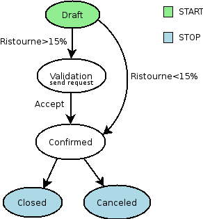

|
 |
Best-selling book on enterprise management |
Creating Wizard - (The Process)
Enter search terms or a module, class or function name.

Retail and Industrial Management, steps towards Sales, Logistics and Manufacturing Integration in the Open Source & Management Collection. |
The workflow system in Open ERP is a very powerful mechanism that can describe the evolution of documents (model) in time.
Workflows are entirely customizable, they can be adapted to the flows and trade logic of almost any company. The workflow system makes Tiny ERP very flexible and allows it to easily support changing needs without having to program new functionalities.
Goals
To understand its utility, see these three examples:
The first diagram represent a very basic workflow of an order:

The order starts in the ‘draft’ state, when it is in redaction and not approved. When the user press on the ‘Confirm’ button, the invoice is created and the order comes into the ‘CONFIRMED’ state.
Then, two operations are possible:
Let’s suppose a company has a need not implemented in OpenERP. For example, suppose their sales staff can only offer discounts of 15% or less. Every order having a discount above 15% must be approved by the sales manager.
This modification in the sale logic doesn’t need any line of python code! A simple modification of the workflow allows us to take this new need into account and add the extra validation step.
The workflow is thus modified as above and the orders will react as we want to. We then only need to modify the order form view and add a validation button at the desired location.
We could then further improve this workflow by sending a request to the sales manager when an order enters the ‘Validation’ state. Workflow nodes can execute object methods; only two lines of Python are needed to send a request asking the sales manager to validate or not the order.

WkfExample3: Acount invoice basic workflow

Workflows are defined in the file server/bin/addons/base/ir/workflow/workflow.py. The first three classes defined in this file are workflow, wkf_activity and wkf_transition. They correspond to the three types of resources that are necessary to describe a workflow :
The general structure of a workflow XML file is as follows :
<?xml version="1.0"?>
<terp>
<data>
<record model="workflow" id=workflow_id>
<field name="name">workflow.name</field>
<field name="osv">resource.model</field>
<field name="on_create">True | False</field>
</record>
</data>
</terp>
Where
Example
The workflow “sale.order.basic” defined in addons/sale/sale_workflow.xml follows exactly this model, the code of its workflow tag is :
<record model="workflow" id="wkf_sale">
<field name="name">sale.order.basic</field>
<field name="osv">sale.order</field>
<field name="on_create">True</field>
</record>
The wkf_activity class represents the nodes of workflows. These nodes are the actions to be executed.

In the OR and AND separation mode, certain workitems can be generated.
In the AND mode, the activity waits for all transitions to be valid, even if some of them are already valid. They are all triggered at the same time. join_mode join_mode:

| The type of the activity can take several values: | |
|---|---|
A sub-workflow is executed when an activity is of the type SUBFLOW. This activity ends when the sub-workflow has finished. While the sub-workflow is active, the workitem of this activity is frozen.
The action indicates the method to execute when a workitem comes into this activity. The method must be defined in a object which belongs this workflow and have the following signature:
In the action though, they will be called by a statement like:
signal_send
flow_start
Indicates if the node is a start node. When a new instance of a workflow is created, a workitem is activated for each activity marked as a flow_start.
Warning
Be warned to not use this flag unless your activity really is a “flow start”. There are tiny versions that do not care about the tags contents like “true” or “false”. Using such tag and tiny version, you will always end up whith an activity which is tagged as “flow start = true”, leaving u with a nasty hunt to find out where your workflow design could be wrong.
This is because tags content are always evaluated as string. Read the section about the eval attribute for an explanation.
Indicates if the node is an ending node. When all the active workitems for a given instance come in the node marked by flow_stop, the workflow is finished.
Warning
Be warned to not use this flag unless your activity really is a “flow stop”. There are tiny versions that do not care about the tags contents like “true” or “false”. Using such tag and tiny version, you will always end up whith an activity which is tagged as “flow stop = true”, leaving u with a nasty hunt to find out where your workflow design could be wrong.
This is because tags content are always evaluated as string. Read the section about the eval attribute for an explanation.
The workflow which this activity belongs to. Defining activities using XML files
<record model="workflow.activity" id="''activity_id''">
<field name="wkf_id" ref="''workflow_id''"/>
<field name="name">''activity.name''</field>::
<field name="split_mode">XOR | OR | AND</field>
<field name="join_mode">XOR | AND</field>
<field name="kind">dummy | function | subflow | stopall</field>
<field name="action">''(...)''</field>
<field name="signal_send">''(...)''</field>
<field name="flow_start">True | False</field>
<field name="flow_stop">True | False</field>
</record>
The first two arguments wkf_id and name are mandatory.
Warning
Be warned to not use flow_start and flow_stop unless your activity really is a flow start or flow_stop. There are tiny versions that do not care about the tags contents like “True” or “False”.
This is because tags content are always evaluated as string. Read the section about the eval attribute for an explanation.
Examples
There are too many possibilities of activity definition to choose from using this definition. We recommend you to have a look at the file server/bin/addons/sale/sale_workflow.xml for several examples of activity definitions.
Workflow transitions are the conditions to be satisfied to go from one activity to the next one. They are represented by one-way arrows joining two activities.
The conditions are of different types:
The roles and signals are evaluated before the expression. If a role or a signal is false, the expression will not be evaluated.
Transition tests may not write values in objects. The fields
act_from
Source activity. When this activity is over, the condition is tested to determine if we can start the ACT_TO activity.
act_to
The destination activity.
condition
Expression to be satisfied if we want the transition done.
signal
When the operation of transition comes from a button pressed in the client form, signal tests the name of the pressed button.
If signal is NULL, no button is necessary to validate this transition.
role_id
The role that a user must have to validate this transition. Defining Transitions Using XML Files
The general structure of a transition record is as follows
<record model="workflow.transition" id="transition_id">
<field name="act_from" ref="activity_id'_1_'"/>
<field name="act_to" ref="activity_id'_2_'"/>
<field name="signal">(...)</field>
<field name="role_id" ref="role_id'_1_'"/>
<field name="condition">(...)</field>
<field name="trigger_model">(...)</field>
<field name="trigger_expr_id">(...)</field>
</record>
Only the fields act_from and act_to are mandatory.
Expressions are written as in python:
Any field from the resource the workflow refers to can be used in these expressions. For example, if you were creating a workflow for partner addresses, you could use expressions like:
Roles can be attached to transitions. If a role is given for a transition, that transition can only be executed if the user who triggered it possess the necessary role.
Each user can have one or several roles. Roles are defined in a tree of roles, parent roles having the rights of all their children.
Example:
CEO
Let’s suppose we handle our own bug database and that the action of marking a bug as valid needs the Testers role. In the example tree above, marking a bug as valid could be done by all the users having the following roles: Testers, Lead developper, Technical manager, CEO.
As of this writing, there is no exception handling in workflows.
Workflows being made of several actions executed in batch, they can’t trigger exceptions. In order to improve the execution efficiency and to release a maximum of locks, workflows commit at the end of each activity. This approach is reasonable because an activity is only started if the conditions of the transactions are satisfied.
The only problem comes from exceptions due to programming errors; in that case, only transactions belonging to the entirely terminated activities are executed. Other transactions are “rolled back”.
Steps for creating a simple state-changing workflow for a custom module called mymod
The first step is to define the States your object can be in. We do this by adding a ‘state’ field to our object, in the _columns collection
_columns = {
...
'state': fields.selection([
('new','New'),
('assigned','Assigned'),
('negotiation','Negotiation'),
('won','Won'),
('lost','Lost')], 'Stage', readonly=True),
}
Add the following additional methods to your object. These will be called by our workflow buttons
def mymod_new(self, cr, uid, ids):
self.write(cr, uid, ids, { 'state' : 'new' })
return True
def mymod_assigned(self, cr, uid, ids):
self.write(cr, uid, ids, { 'state' : 'assigned' })
return True
def mymod_negotiation(self, cr, uid, ids):
self.write(cr, uid, ids, { 'state' : 'negotiation' })
return True
def mymod_won(self, cr, uid, ids):
self.write(cr, uid, ids, { 'state' : 'won' })
return True
def mymod_lost(self, cr, uid, ids):
self.write(cr, uid, ids, { 'state' : 'lost' })
return True
Obviously you would extend these methods in the future to do something more useful! Create your Workflow XML file —————————–
There are three types of records we need to define in a file called mymod_workflow.xml
Add mymod_workflow.xml to __terp__.py
Edit your module’s __terp__.py and add mymod_workflow.xml to the “update_xml” array, so that OpenERP picks it up next time your module is loaded. Add Workflow Buttons to your View
The final step is to add the required buttons to mymod_views.xml file.
Add the following at the end of the <form> section of your object’s view definition:
Now use the Module Manager to install or update your module. If you have done everything correctly you shouldn’t get any errors. You can check if your workflow is installed in Administration -> Customisation -> Workflow Definitions
When you are testing, remember that the workflow will only apply to NEW records that you create.
If your buttons do not seem to be doing anything, one of the following two things are likely:
Creating Wizard - (The Process)
Enter search terms or a module, class or function name.
|
Retail and Industrial Management, steps towards Sales, Logistics and Manufacturing Integration in the Open Source & Management Collection. |